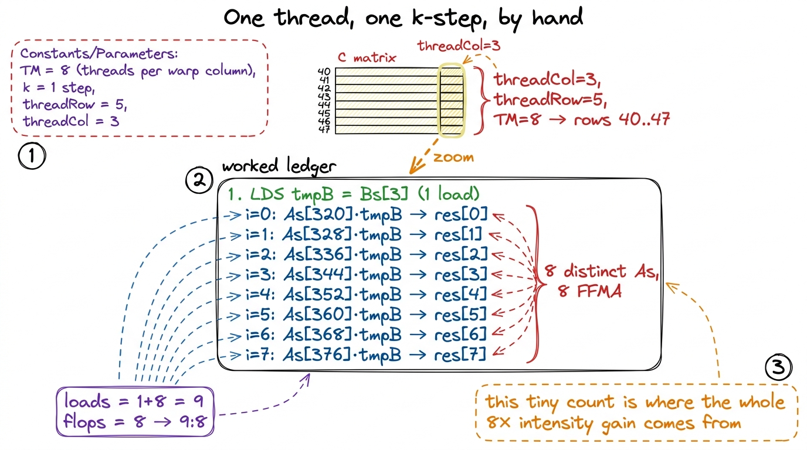
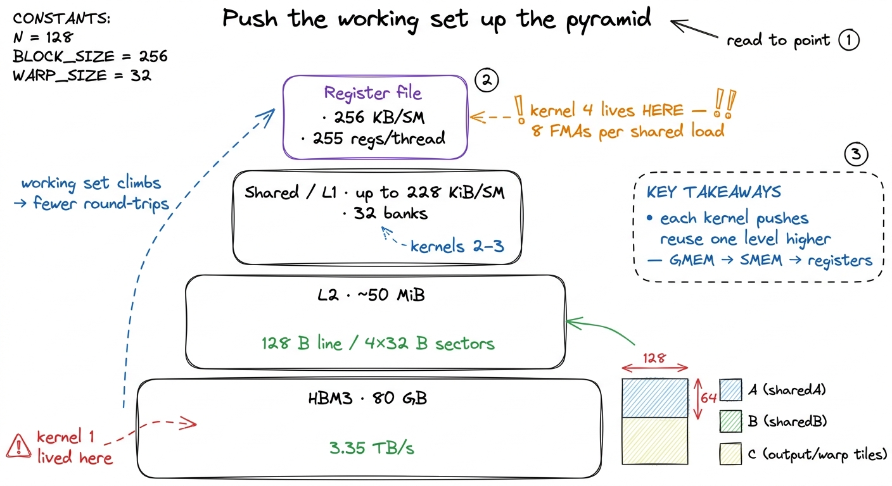

Kernel 4: 1D block-tiling 36.5%
Before we touch a line of code, let me put one number on the table and let it sit there, because the whole article is really about this one number. In kernel 3 we staged tiles of A and B in shared memory and reused them across a whole thread block. That was a real win — we stopped hammering HBM on every step and climbed to 12.8% of cuBLAS. And yet, per output element, that kernel issues two shared-memory loads for every one multiply-add. Two loads. One flop. Hold that ratio in your head. By the end of this article we will have bent it down to roughly nine loads for every eight flops — almost one-to-one — and that single change of ratio is worth a 2.8× speedup, taking us to 36.5% of cuBLAS. It is the biggest jump on the whole ladder.
This is kernel 4, and it is the first rung where the trick is not "move the data to a faster kind of memory." Kernels 2 and 3 were both about memory levels. This one is about doing more arithmetic with each byte you've already fetched. The lever has a name — register reuse — and the goal of this article is to make it so obvious, from the ground up, that you could re-derive it yourself.1 This kernel follows Simon Boehm's "How to Optimize a CUDA Matmul Kernel", kernel 4. The tile sizes — BM = BN = 64, BK = 8, TM = 8 — are his, and they are a reasonable-but-not-tuned starting point; we autotune them properly a few kernels later.
The question this article answers
Here is the puzzle in one sentence: shared memory is fast, so why did making our loads hit shared memory instead of global memory leave us stalled at 12.8%?
If you're new to this, that should feel strange. We were told the problem with the naive kernel was that it read from HBM constantly, and HBM is slow — a load can take hundreds of cycles. Shared memory is on-chip, roughly a hundred times lower latency. We moved the working set there. So why isn't the GPU flying?
The honest answer is the one nobody says out loud at first: fast is not the same as free. A shared-memory load is cheap compared to an HBM load, but it is not zero. It still occupies a load/store unit. It still travels through the shared-memory crossbar. And if your kernel issues so many of them, per unit of useful arithmetic, that the load/store pipeline can never catch up, then it does not matter how fast each individual load is. You are throttled by the number of loads, not their latency. That is exactly where kernel 3 left us. Let me prove it with a bit of by-hand counting.
A recap you can do on a napkin: what one thread actually costs
Let me rebuild the shared-memory kernel's cost from scratch, because everything downstream depends on getting this count right. Forget the whole matrix; zoom all the way down to one thread computing one entry of C. That is what kernel 3 does — one thread, one output.
To produce one entry of C, the thread computes a dot product down the K dimension: it walks k = 0, 1, 2, …, K-1, and on each step it does one multiply-add. The math per output is 2K floating-point operations (K multiplies + K adds). That part is fixed — it is the definition of matrix multiply, and no kernel can cheat it.
Now count the memory work for that same one output. On every step of the k loop, the thread needs two operands: one value of A (from sharedA) and one value of B (from sharedB). So it issues two shared-memory loads per step, and there are K steps. That's 2K shared loads to feed 2K flops.
Look at that ratio for a second. Per step: 2 loads, 1 fused multiply-add. A 2:1 ratio of shared loads to flops.2 I'm counting an FMA — fused multiply-add — as one "flop" of work here even though it does two arithmetic operations, because the hardware issues it as a single FFMA instruction. The load-to-instruction ratio is what the load/store pipeline actually feels, so that's the ratio that matters for the stall.
That 2:1 is the villain of this article. The term for it is arithmetic intensity — the number of flops you get per byte (or per load) you move. Kernel 3's arithmetic intensity, measured against shared memory, is low: you're moving two operands and getting one instruction of arithmetic out of them. When intensity is this low, the load/store units are the bottleneck, and the actual FP32 math units — the things that are supposed to be doing the work — sit idle waiting for operands to arrive.
 figure rendering · The shared-memory kernel spends two fetches per unit of cooking — the
figure rendering · The shared-memory kernel spends two fetches per unit of cooking — the I like this kitchen picture because it survives the whole article. The cook is a compute unit. The conveyor belt is the load/store pipeline. The pantry is shared memory. Right now the belt makes two trips for every one dish the cook produces, so the cook is idle most of the time and the belt is the constraint. Everything we do from here is about making the cook produce more dishes per trip of the belt. Keep the kitchen in mind.
And the profiler agrees this is what's happening. When you run kernel 3 under Nsight Compute and look at the warp-state breakdown — which tells you why warps aren't issuing — the dominant reason is Stall MIO Throttle. MIO is the memory-input/output pipeline; "throttle" means it's backed up. In plain words: warps are standing in line waiting to issue their next shared-memory load because the load/store unit is saturated. That is the 2:1 ratio showing up as a measured stall. The hypothesis and the profiler are telling the same story.
The hypothesis: change the shape, not the memory level
So how do we make the cook produce more dishes per trip? Here is the key observation, and it's the heart of the kernel.
When the thread owns just one output, each A value and each B value it fetches is used exactly once — one multiply, then thrown away. That's the waste. But look at the structure of matrix multiply. A single value from B at column n, step k, gets multiplied into every output in that column n. And a single value from A at row m, step k, gets multiplied into every output in row m. The operands are naturally shared across many outputs. Kernel 3 just refuses to exploit it, because each thread only owns one output and never sees the neighbors.
So change the shape of what a thread owns. Instead of one thread → one element of C, we make one thread own a small column of TM elements — eight of them, stacked vertically in the same column n. Watch what that does to the fetches.
All eight of those outputs live in the same column n. So on a given step k, all eight of them multiply against the same value of sharedB (same column, same step). But they live in eight different rows m, so they multiply against eight different values of sharedA (eight rows, same step). Concretely, the plan for one k-step is:
- Load the one needed
sharedBvalue into a register once. - Load the eight needed
sharedAvalues into eight registers once. - Do eight multiply-adds against those registers.
Count it up. We paid for 1 + 8 = 9 shared-memory loads and we got 8 flops out of them. The ratio moved from 2:1 (loads:flops) to 9:8 — from two loads per flop to nine loads per eight flops, which is barely more than one load per flop. And if we're clever about the loop order (we will be), the single sharedB load amortizes across the whole column so it barely counts at all. Either way, the useful flops per shared load just went up by roughly a factor of eight.3 Counted per result element, the shared traffic drops from 2·K loads to about (9/8)·K, and — bonus — the global traffic drops from K/16 to K/32 loads too, because a thread that owns 8 outputs also pulls a taller strip of A and B per outer step, halving the redundant global reads. So this one change improves intensity at both memory levels at once.
This is worth pausing on, because it's the surprising part. We did not touch the memory hierarchy. The data still lives in the same shared memory it lived in before. We didn't add a faster cache. We changed how many outputs a thread is responsible for, and that alone raised the arithmetic intensity ~8×. In the kitchen picture: same pantry, same belt — but now every trip of the belt brings enough ingredients for eight dishes instead of one, so the cook is finally busy.
 figure rendering · Kernel 4. Each thread computes a column of TM=8 outputs, caching a col
figure rendering · Kernel 4. Each thread computes a column of TM=8 outputs, caching a colWhy registers are where this has to happen
One more foundational question before the code, because it's the one I got wrong the first time I reasoned about this. Where do those cached values live? The answer is registers, and it matters that it's registers specifically and not, say, "keep it in shared memory and just read it less."
Think about what an arithmetic unit can actually read. When an FP32 core executes FFMA, it reads its operands from the register file. Registers are the only storage the ALU can read an operand from directly — they sit one wire away from the math units, effectively zero latency, and they are private to each thread.4 Registers are private to each thread — with one exception: warp-shuffle instructions let threads in a warp read each other's registers directly, which is how warp-tiling and tensor-core kernels move data without a shared-memory round-trip. For our purposes here, treat registers as strictly private. Everything below registers — even shared memory, even the L1 cache next to it — is a detour: the value has to be loaded (LDS) into a register before the ALU can use it.
So "read shared memory less" and "keep the value in a register" are the same sentence. When we say tmpB is loaded once and reused across eight FMAs, what we physically mean is: one LDS instruction pulls the value from shared memory into a register, and then eight FFMA instructions read that register with no LDS in between. The reuse is the value living in the register file across those eight instructions. That's why this optimization is called register reuse — the register file is the top of the memory pyramid, the fastest storage on the chip, and we're finally staging our hot working set there.
The code, concept first
Structurally, kernel 4 loads shared memory exactly like kernel 3: the block cooperatively pulls a BM × BK strip of A and a BK × BN strip of B into sharedA and sharedB. That part is unchanged — go back to the shared-memory article if the cooperative-load pattern is fuzzy. What changes is the compute loop.
Two changes, and they go together. First, each thread now carries an array of TM accumulators in registers, threadResults[TM], one per output it owns. Second — and this is the subtle, load-bearing part — we reorder the loops so the dot-product step k is the outer loop and the TM results are the inner loop.
// Per thread: TM=8 accumulators live in registers.
float threadResults[TM] = {0.0f};
for (uint k = 0; k < BK; ++k) { // dot-product step (outer)
// one Bs value, reused across the whole column:
float tmpB = Bs[k * BN + threadCol];
for (uint i = 0; i < TM; ++i) { // the TM results (inner)
// eight distinct As values, one per output row:
threadResults[i] += As[(threadRow * TM + i) * BK + k] * tmpB;
}
}Why is the loop order the trick, and not just the accumulator array? Because tmpB does not depend on i. With k on the outside, we compute tmpB once per k-step, and then the inner loop sweeps it across all eight results without touching shared memory again. If instead we'd kept k on the inside (as in kernel 3), we'd be re-loading a B value on every single multiply — right back to the 2:1 ratio. Hoisting the sharedB load out of the inner loop is the mechanical move that makes register reuse legal: it's what turns "load once, use eight times" from a wish into what the compiler actually emits.
 figure rendering · Making k the outer loop lets one Bs load feed a tight, uninterrupted r
figure rendering · Making k the outer loop lets one Bs load feed a tight, uninterrupted rRead the inner loop one more time with fresh eyes. tmpB is hoisted into a register and touched once for eight multiply-adds. The As accesses do depend on i — eight consecutive rows — but they're eight values loaded from shared memory into eight registers, and the compiler keeps that whole As column live in the register file across the inner loop. So the inner loop is: read a register (tmpB), read a register (As[i]), multiply-add into a register (threadResults[i]). No shared memory in sight. That's the cook making eight dishes from one delivery.5 With TM = 8, this kernel uses roughly 37 registers per thread — the 8 accumulators plus the As staging registers and loop bookkeeping — comfortably inside the H100's budget of 255 registers/thread. Push TM too high and you spill to local memory, which is just HBM wearing a disguise; the profiler catches it instantly as a wall of LDL/STL (load/store-local) instructions.
A cost that's easy to under-count: occupancy
Here's a question a careful reader should be asking: if each thread now carries a whole array of accumulators in registers, don't we run fewer threads at once? And doesn't the GPU rely on having tons of threads to hide latency? Yes on both counts — and it's worth doing the arithmetic, because it teaches something important. Let me first pin down how many threads a kernel-4 block even launches, because that's the number everything else hangs on.
Count it from the tile. The block owns a BM × BN = 64 × 64 tile of C, that's 4,096 output elements. But each thread now owns a column of TM = 8 of them, so the number of threads we need is 4,096 / 8 = 512 threads per block, not the 1,024 that kernel 3 launched. That's the first thing register-tiling changes and it's easy to miss: giving each thread more work means you need fewer threads to cover the same tile.6 Kernel 3 gave every thread exactly one output — one thread per element — so a 32 × 32 tile took 1,024 threads. Kernel 4 grows the tile to 64 × 64 but folds TM = 8 elements into each thread, landing at 4,096 / 8 = 512 threads. Bigger tile, fewer threads, eight times the work each — that's the whole register-tiling move in one line.
Now the occupancy. Already in kernel 3 the shared-memory kernel was not at full occupancy: with 1,024 threads per block and about 37 registers per thread, and an SM register file of 65,536 registers, the block needed enough of that file that only one block could be resident at a time — 32 active warps out of a possible 48, which is 66% occupancy. So we didn't arrive at reduced occupancy in kernel 4; we inherited a ceiling that was already there.7 These occupancy numbers are siboehm's for the reference A100-class SM (65,536 registers, 48-warp max) and depend on the exact register count the compiler picks, which drifts slightly between CUDA versions and cards — an H100 has a 64-warp max, for instance. The takeaway — that arithmetic-heavy kernels can afford to leave occupancy on the table — is what's stable, not any specific 66%.
Now, 66% occupancy sounds like a regression — we're leaving a third of the warp slots empty. And for kernel 3, that ceiling genuinely hurt, because kernel 3 leaned on having many warps in flight to hide its memory latency (while one warp waits on a load, run another). But kernel 4 is different, and this is the beautiful part: we raised arithmetic intensity, so we depend on latency-hiding much less. The cook is busy now. There's less waiting to hide, so having fewer resident warps costs us far less than it would have a memory-bound kernel. Trading occupancy headroom for a much better loads-to-flops ratio is a good deal — and it's a preview of a theme that runs through the rest of the ladder: past a certain point, doing more work per thread beats running more threads.
The measurement
Time to put a number on it. The kernel lands at about 8,474 GFLOP/s, which is 36.5% of cuBLAS on the same FP32 problem (cuBLAS itself does about 23,250 GFLOP/s here). Against kernel 3's 2,980 GFLOP/s, that's a 2.8× speedup — the largest single jump on the ladder.8 These are the reference H100 numbers; exact GFLOP/s wobbles a few percent between launches and cards, but the ratio to cuBLAS is stable. 36.5% is the honest, un-rounded figure. For a change that touched only the compute loop and added a small register array — no new memory level, no new hardware feature — that is an enormous return on effort. This is the moment where kernel engineering starts to feel like leverage.
Why did it work, in the profiler's own words? Exactly the story we hypothesized. In kernel 3, the warp-state breakdown was dominated by Stall MIO Throttle — warps idling because the load/store pipe was backed up. In kernel 4 that stall reason collapses. We issue far fewer shared loads per flop, the load/store queue drains, and warps spend their cycles issuing FFMA instructions instead of waiting to issue the next LDS. The instruction mix itself shifts: kernel 3's inner loop was dominated by LDS; kernel 4's is a healthy balance of LDS and FFMA, tilted toward arithmetic. The bottleneck moved off the memory pipeline. The cook is finally cooking.
Seeing it in the machine code
Let me make this concrete at the level the hardware actually executes, because SASS (the real assembly) is where a hypothesis becomes a fact. Inspect the compiled inner loop for one k-step and you'll see something clean: a single LDS at the top that fills tmpB, followed by eight FFMA instructions back-to-back, and — the key detail — no LDS sits between those eight FFMAs. All eight read the same register operand for tmpB and eight distinct register operands for the As column.
That is register reuse made visible. The single shared load has been lifted to the top of the k-iteration, and then eight arithmetic instructions issue in an uninterrupted cluster. The data the ALU needs is already sitting in the register file, one wire away, instead of a shared-memory round-trip away. Compare that to kernel 3's SASS, where an LDS sat before every FFMA and the memory pipe never got a break. The whole optimization fits in one before/after glance at the assembly: LDS, FFMA, LDS, FFMA, … becomes LDS, FFMA, FFMA, FFMA, FFMA, FFMA, FFMA, FFMA, FFMA.
 figure rendering · The SASS shows one hoisted LDS feeding eight back-to-back FFMAs — the
figure rendering · The SASS shows one hoisted LDS feeding eight back-to-back FFMAs — the Zooming all the way in: one thread, by hand
Let me trace a single thread through one k-step with real indices, because a walked-through example nails down everything the prose only gestured at. Take the thread that owns column threadCol = 3 and the row-group threadRow = 5, with TM = 8. Its eight outputs are the cells in column 3, rows 5·8 + 0 through 5·8 + 7 — that is rows 40 through 47.
Now do the k = 0 step:
- One
LDS:tmpB = Bs[0·64 + 3] = Bs[3]. One value ofB, into one register. This is the single delivery that will feed all eight dishes. - The inner loop,
i = 0…7: each iteration readsAs[(5·8 + i)·8 + 0]— that'sAs[320], As[328], As[336], …, As[376], eight distinct values, one per row 40–47 — multiplies each bytmpB, and adds intothreadResults[i]. - Tally: we issued
1 + 8 = 9shared loads and did8FFMAs. 9 loads, 8 flops. There is our9:8ratio, in the flesh, for a single thread on a single step.
Multiply that pattern over BK = 8 steps and over the whole block and you have the kernel. But the ratio is set right here, in these nine loads and eight flops, and you can check it by hand in ten seconds. Every big number in this article — the 8× intensity gain, the 2.8× speedup, the 36.5% — traces back to this tiny by-hand count.

figure rendering · Walking one thread through k=0: one Bs load feeds eight FFMAs againstWhy this generalizes: one idea at four heights
Step back, because we're about to run this move a third and fourth time, and the pattern is worth naming. Every rung of this ladder so far is the same idea applied at a different level of the memory hierarchy:
- Kernel 2 fixed coalescing so each global memory transaction was fully used — no bytes fetched and wasted.
- Kernel 3 staged tiles in shared memory so we stopped re-reading global for data we'd already fetched.
- Kernel 4 stages a column in registers so we stop re-reading shared for data an ALU is about to use eight times.
There's a memory pyramid underneath all of this — HBM at the bottom, then L2, then shared/L1, then the register file at the very top — and the entire game is to push your working set as high up that pyramid as it will fit, then squeeze the maximum number of flops out of it before it comes back down.9 The register file is the top of the pyramid: private to each thread, effectively zero-latency, and the only storage an ALU reads operands from directly. The catch is always capacity — 256 KB per SM sounds huge until you divide it across up to 2,048 resident threads, which is exactly why TM can't grow without bound and why occupancy dropped to 66%. Register reuse is that principle applied at the very top, which is why it's the highest-leverage version of it: registers are the fastest storage on the chip, so squeezing flops out of them is the best deal available.

figure rendering · The ladder is one idea at four levels: stage the working set as high iThis mental model — climb the pyramid, then extract — is the single most useful thing to carry out of this article. It's why FlashAttention keeps the attention working set in SRAM and registers rather than writing the full score matrix back to HBM; it's why production GEMM libraries like cuBLAS and CUTLASS obsess over register-tile shapes; it's why DeepSeek's DeepGEMM and vLLM's fused kernels are structured the way they are. Different problems, same pyramid.
The bridge to kernel 5
We tripled throughput by making one thread do a column of work, reusing each sharedB value down eight rows. The next question writes itself: if reusing B down a column bought us 8×, why not reuse in both directions at once?
Give each thread a small TM × TN tile of C instead of a TM × 1 column. Then a loaded As value gets reused across TN columns and a loaded Bs value gets reused across TM rows — reuse in two dimensions, multiplicatively. That's 2D block-tiling, and it pushes our 9:8 ratio to something far better. We're also still leaving speed on the table right here in kernel 4: the shared loads that remain are scalar LDS, one 32-bit word at a time, when the hardware can move 128 bits in a single instruction — the fix for that is vectorized loads a couple of rungs on.
Kernel 5 takes the 2D-tiling step and lands us at 68.7% of cuBLAS — past the halfway mark to a library NVIDIA has been tuning for fifteen years, still using nothing but arithmetic intensity we derived from a hand count and confirmed in a profiler. Same idea, one dimension richer. The cook is about to get very busy.